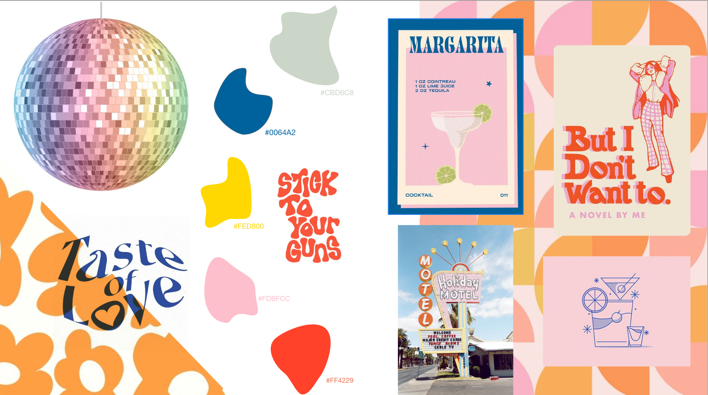

TEMA 2: GRUNDLÆGGENDE WEB
I tema 2 lærte vi om grundlæggende web, herunder de mest anvendte redskaber, faglige begreber
samt metoder, der skabte fundamentet for vores kommende temaer.
Vi blev f.eks. introduceret til HTML, og CSS
herunder blandt andet grid, flex og media queries.
Vi blev også introduceret til de grundlæggende
arbejdsværktøjer så som, designprincipper, moodboards, styletile og wireframes.
Vi blev også introduceret til
Adobe photoshop og Adobe XD
MOBILSITE
www.mobilwebsite.dk
Studiesstartsprøven gik ud på at at lave et mobilwebsite responsivt til desktop, vi fik udleveret
alt indhold samt wireframe og layoutdiagram. Jeg gjorde ikke brug af moodboard eller styltile, men herunder ses
wireframe ved siden af det endelige produkt.
Jeg har linket til mobilsitet.
WIREFRAME OG FÆRDIG SIDE
EMNESITE
www.emnesite.dk
Opgaven emnesite var meget fri, og her skulle vi bruge vores nye viden fra den tideligere opgave.
Jeg lavede en hjemmeside med cocktail opskrifter, der tog udgangspunkt i retrostilen, meget inspireret af
70-erne med massere af farver, fængende typografier og bløde former.
Jeg gjorde brug af både moodboard og
styletile.
MOODBOARD

SYLETILE
WIREFRAME